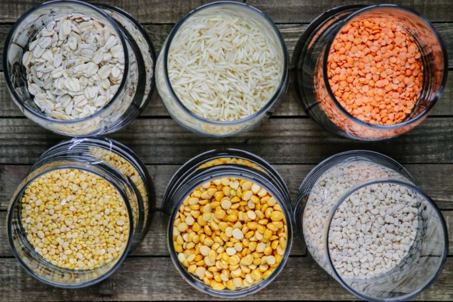

Haleem (also called daleem, halim, etc.) is a Pakistani, Indian and/or Hyderabadi thick stew made with various grains, lentils (dal/daal), and meat.
Traditionally, each component is cooked separately, then mixed together and slow-cooked to achieve the thick and luscious texture.
The resulting interwoven or ‘laced’ consistency is Haleem’s distinguishing feature.
While this recipe calls for several ingredients, all of them are readily available at most Indian and Pakistani grocery stores.
Clockwise from Top Left – Rolled Oats, Basmati Rice, Masoor Dal (Red Lentils), Urad (Mash) Dal, Split Chana Dal (split chickpeas), and Moong Dal (sometimes called Yellow Lentils)